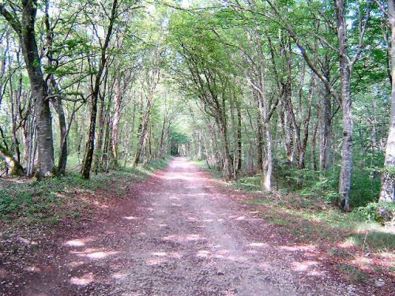
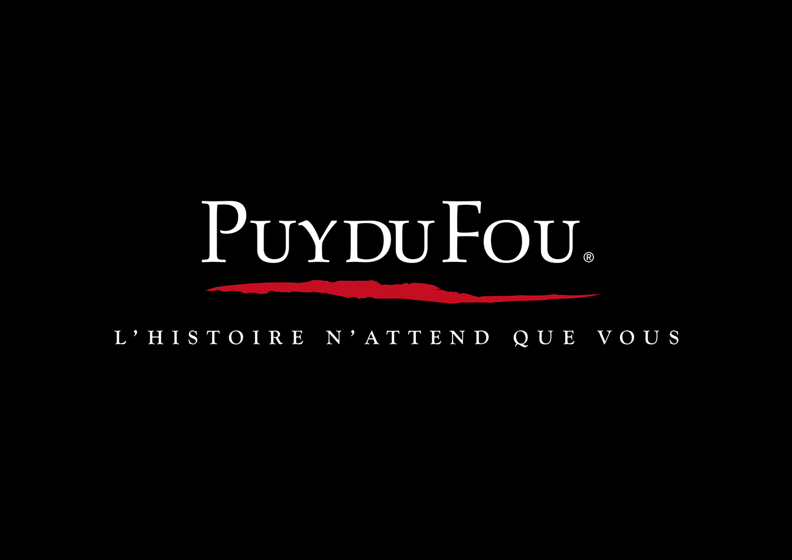
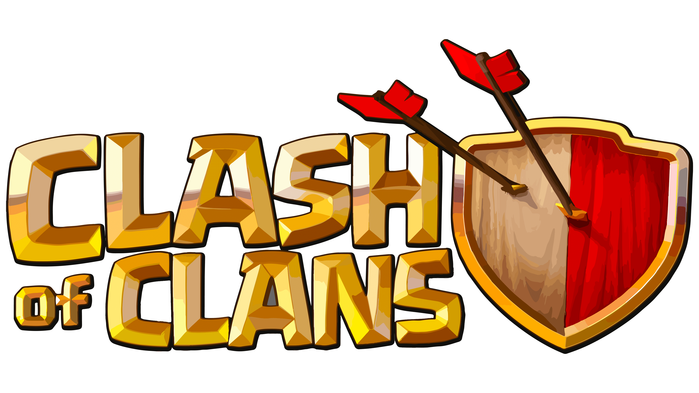
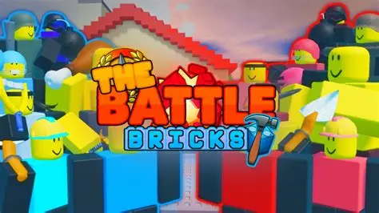

Balade solitaire
J'aime les balades silencieuses tant en profitant de l'environnement autour de moi. En général, je me promène dans des lieux calmes mais parfois je vais en ville. Cela me permet de vider mes esprits, de pouvoir mieux réflechir, d'être moins stressant.█

Puy du Fou et les parcs d'attractions
En raison de ma surdité, je bénéficie d'une carte de mobilité inclusion, ce qui me permet de faire les attractions et assister aux spectacles sans attendre. Mes parents m'y emmene à chaque vacances d'été à des parcs à thémes différentes : Disneyland, Parc Astérix, Nigloland, EuropaPark, Port Aventura et FerrariLand... Mais le préférer pour moi sera le Puy du Fou, leurs spectacles sont grandioses et impressionnantes, surtout le spectacles du soir ! Il faut voir le bon côté des choses.█

Clash of Clans
Bien que je joue de moins en moins aux jeux vidéos, je continue de joué à Clash of Clans. Mon père m'a fait découvrir ce jeu à sa sortie, quand j'était en primaire, mais c'est à partir de noël 2022 que j'ai décidé de l'installer. Il est addictif et teste notre patience, les nouveaux niveaux et les nouvelles mises à jours m'encourage à y jouer. Ce jeu est en pleine potentiel depuis la refonte de du combat multijoueur.█

The Battle Bricks
Mon jeu préférer pour toujours sera The Battle Bricks ! The Battle Bricks est un jeu 2D, inspiré d'un autre jeu appeller The Battle Cats, où notre objectif est de détruire la base ennemie tout en protégeant notre base avec notre propre armée. Ce jeu est composé de 4 chapitres, où on attaque les sans caratéristiques, les rouges, les noirs et les anges. Je suis vite tombé addicte à ce jeu car je veux découvrir les nouveaux ennemies, les nouveaux territoires, nos nouveaux troupes et devenir puissant !█
